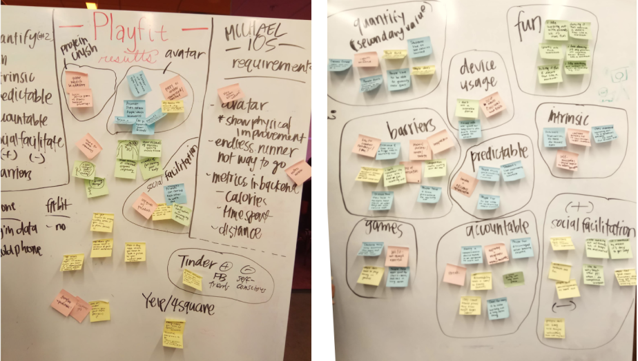
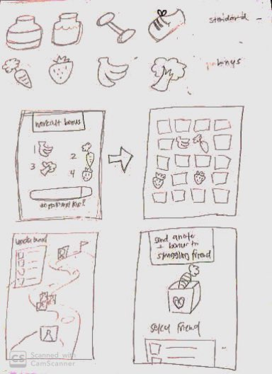

The design process is hardly ever linear and this project is no exception.
Our task since its conception has diverged into multiple channels from gamifying
the fitness motivation experience to a social media platform. I have divided our
multi-faceted process into two parts: (1) fitness motivation game and (2)
fitness app onboarding.
This page is the fitness motivation game, which includes:
👉 A run-through of the highlights of our research
👉 Synthesis of data collected
👉 Ideation - and an elaboration on my part
CONTEXT
According to our client, the target user was someone with (1) a desire to get
fit (2) perhaps have a fitness routine in mind or in place (3) and struggle
to keep the motivation.
SCREENED INTERVIEWS + INSIGHTS
We crafted a screener survey and selected 11 participants to interview.
Our questions targeted both fitness and mobile preferences.
1. Many were initially motivated by body image to become fit but continued because they felt healthier and stronger.
2. Main barriers to working out
👉Time management
👉Distance from gym
👉Lack of motivation
👉Lack of sleep and energy
3. Half had consistent routines; half did not
SURVEY + INSIGHTS
In order to get a broader scope on our topic, we released a mass survey to 93 participants,
ages 18-36. Most were college students.
- 72% have started a routine and stopped in the past year
- 57% have an issue staying motivated
SECONDARY RESEARCH
We also did secondary research on current trends and expert opinions.
- Users are more motivated to work out when they have a positive self-perception,
have healthy competition, and enjoy their workout.
- Users are more likely to play fitness games when playing against friends.
- Users enjoy using Youtube as a source of fitness videos because there is less
chance of social anxiety, they are accessible, and Youtubers are engaging and
empowering.
RESEARCH ANALYSIS
My team got together and affinity mapped our research findings. Though unsure of
where to start, we came up with some common themes and began ideating for our original
game task.
Multiple barriers to fitness motivation
↘️ Time, fatigue, inexperience
Desired game features in a fitness app
↘️ Predictability, accountability, fitness as a consequence
Ways to motivate
↘️ Social facilitation, recognizing intrinsic motivation, entertainment ability

IDEATION
Following our research analysis, each person on our four-person team came up with a game idea.
I did some extra secondary research into Gen Z’s usage of apps. Their attitude towards games
was to combat boredom and they felt towards lifestyle apps created efficiency. Thus, I knew
the game had to balance both somehow. After considering all the research, I believed the game
should birth a cycle of motivation using boredom and efficiency.
Get bored → Play game → A desire for free power-ups fuels motivation to exercise → Earn power-ups → Play more
I came up with Protein Crush, which is essentially Candy Crush but instead of candy items,
it would be healthy items e.g. bananas, weights, running shoes, etc. Instead of money or wait
time as currency, users will earn power-ups through achieving fitness goals. The game is
known to be addicting and in its own way, motivating. At the time, Candy Crush was the #1
Grossing Game in Play Store, #15 in Arcade, and #39 in iTunes store.
Still being inspired by Candy Crush, I thought that a Facebook integration would promote
social facilitation and healthy competition. For example, users can send power-ups to each
other to encourage friends that are inactive!
